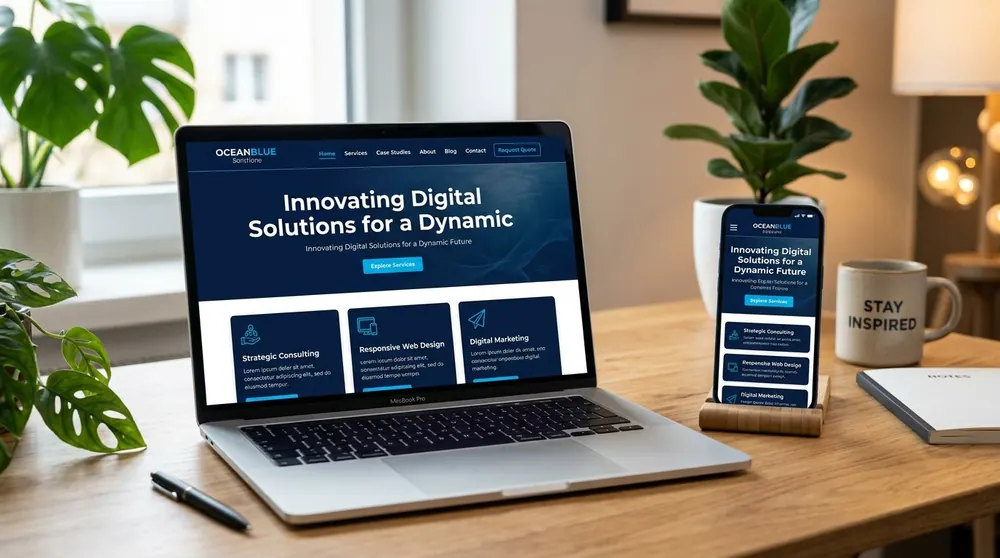
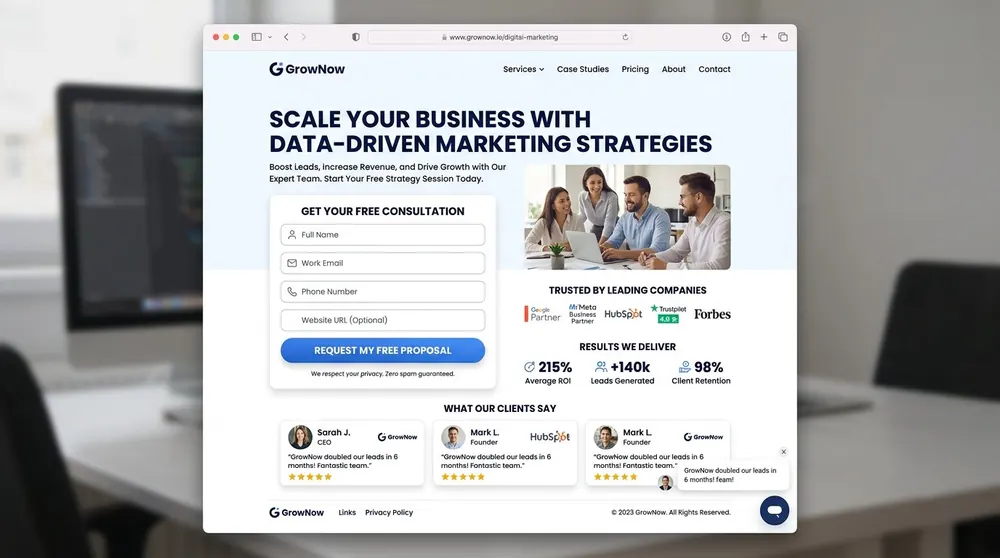
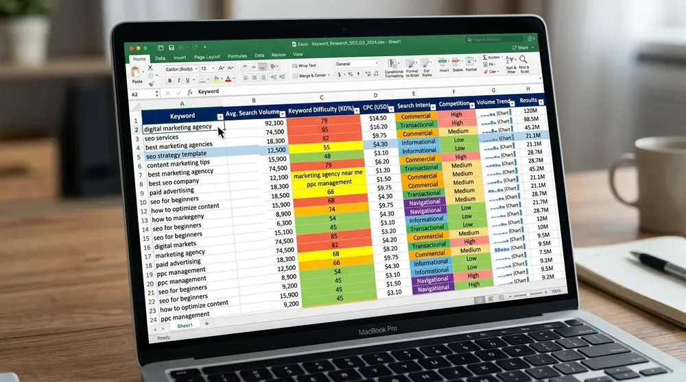
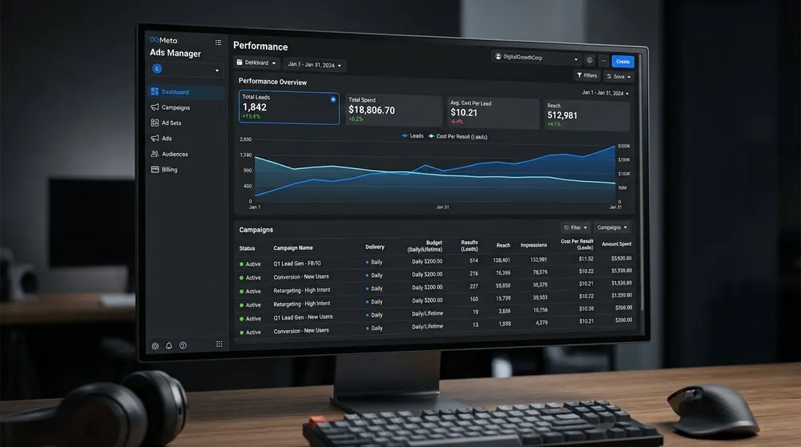
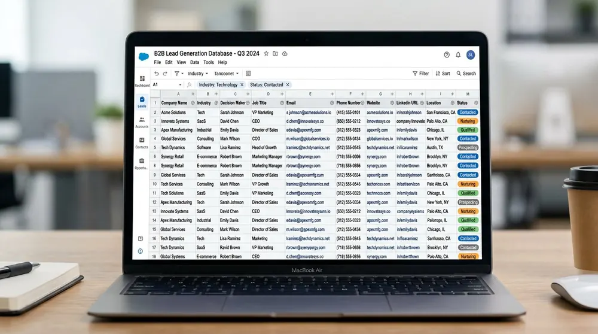

Web · demoCustom business website
A responsive HTML, CSS and JavaScript concept with a clear navigation, service architecture, contact path and performance-minded asset plan.
View the project outline →The examples on this page are concept or demo projects unless a project is explicitly identified otherwise. They show possible deliverables and process — not invented client results, rankings or testimonials.
Each outline links to a fuller project view from the existing portfolio system.

Web · demoA responsive HTML, CSS and JavaScript concept with a clear navigation, service architecture, contact path and performance-minded asset plan.
View the project outline →
Web · demoA single-goal landing page concept covering hierarchy, objections, form fields, validation, analytics readiness and mobile-first structure.
View the project outline → SEO · demo
SEO · demoAn audit-to-action plan covering local search visibility, keyword mapping, Google Business Profile and measurement.
View the project outline →
Research · demoA filterable mapping document that assigns intent, opportunity and one primary page to each target topic.
View the project outline →
Paid media · demoA campaign blueprint covering audience layers, creative testing, lead qualification questions and event measurement.
View the project outline →
Lead research · demoAn ICP-filtered research workflow showing company sourcing, decision-maker relevance, verification notes and clean delivery.
View the project outline →A concept project is a starting point for a conversation, not a promise that every element belongs in your project. Your scope may need one service page, a full website, a market-specific keyword map, a campaign review or a lead research batch.
When you share the actual brief, I can separate what should be done now from what can wait. That is more useful than copying a portfolio screenshot without understanding its purpose.
Discuss your brief ↗Send your website, audience and desired outcome. I’ll explain what can be adapted and what needs a fresh approach.